사회조사분석사-2급 (2014-03-02 기출문제)
1과목: 조사방법론 I
1. 순수실험설계와 유사실험설계를 구분하는 기준은?
- 독립변수의 설정
- 비교집단의 설정
- 종속변수의 설정
- 실험대상 선정의 무작위화
(정답률: 67%)

2. 사례연구에 관한 설명으로 틀린 것은?
- 사례연구는 질적 조사방법으로 양적인 방법을 사용하여 수집한 증거는 이용하지 않는다.
- 사례연구에서는 기존 문서의 분석이나 관찰 등과 같은 방법으로 자료를 수집한다.
- 사례는 개인, 프로그램, 의사결정, 조직, 사건 등이 될 수 있다.
- 사례연구는 한 특정한 사례에 대해 집중적으로 연구하는 것이다.
(정답률: 80%)
3. 비구조화(비표준화) 면접에 관한 옳은 설명을 모두 고른 것은?(오류 신고가 접수된 문제입니다. 반드시 정답과 해설을 확인하시기 바랍니다.)
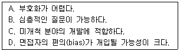
- A, B
- C, D
- A, B, C
- B, C, D
(정답률: 42%)
4. 관찰의 세부 유형에 관한 설명으로 틀린 것은?
- 관찰이 일어나는 상황이 실제상황인지 연구자가 만들어 놓은 인위적인 상황인지를 기준으로 자연적 관찰과 인위적 관찰로 구분한다.
- 피관찰자가 자신의 행동이 관찰된다는 사실을 알고 있는지 모르고 있는지를 기준으로 공개적 관찰과 비공개적 관찰로 구분한다.
- 표준관찰기록양식의 사전 결정 등 체계의 정도에 따라 체계적 관찰과 비체계적 관찰로 구분한다.
- 관찰에 사용하는 도구에 따라 직접관찰과 간접관찰로 구분한다.
(정답률: 82%)
5. 기술적(descriptive)조사에 대한 설명으로 틀린 것은?
- 현상에 대한 탐구와 명료화를 주목적으로 한다.
- 계획, 모니터링, 평가에 필요한 자료를 산출하기 위하여 자주 사용한다.
- 사회현상이 야기된 원인과 결과를 밝혀 정확히 기술하는 것이다.
- 행정실무자와 정책분석가들에게 가장 기본적인 조사도구이다.
(정답률: 47%)
6. 다음 중 가설에 관한 설명으로 틀린 것은?
- 둘 이상의 변수들 간의 관계를 진술한다.
- 검증을 위해 마련된 것이다.
- 가설은 진실여부가 확인된 명제이다.
- 가설설정을 위하여 조작화가 필요하다.
(정답률: 75%)
7. 다음 사례에 대한 타당도 저해요인에 기초한 비판 중 그 성격이 나머지와 다른 하나는?
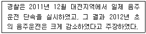
- 가장 음주운전이 많은 시기는 연말이므로, 자연스럽게 예전의 상태로 돌아온 것뿐이다.
- 경찰이 2012년부터 새 음주측정기로 교체하였으므로, 이 감소는 음주측정기의 교체로 인한 것이다.
- 이 결과는 대전지역에서나 가능한 이야기이지, 다른 지역에서는 감소시키기 어려웠을 것이다.
- 2012년부터 주류세가 대폭 인사되었으므로, 음주가 줄어든 것이 음주운전 감소의 원인이다.
(정답률: 65%)
8. 다음 중 과학적 연구의 특징에 관한 설명으로 틀린 것은?
- 과학적 연구는 연구결과의 일반화를 목적으로 한다.
- 과학적 연구는 최소한의 정보로 최대한의 설명력을 확보하는 것이 바람직하다.
- 과학적 연구는 다른 연구자에 의해서도 검증이 가능해야 한다.
- 과학적 연구의 결과는 수정될 수 없는 것이어야 한다.
(정답률: 86%)
9. 다음 중 탐색적 연구를 하기 위한 방법으로 가장 적합한 것은?
- 횡단연구
- 유사실험설계
- 시계열연구
- 사례연구
(정답률: 65%)
10. 경험적 연구방법에 관한 설명으로 틀린 것은?
- 참여관찰의 결과는 일반화의 가능성이 높다.
- 조사연구는 대규모의 모집단의 특성을 기술하는데 유용하다.
- 내용분석은 기록이 된 의사전달을 조사하는 것으로 제한되어 있다.
- 실험은 다른 변수들의 영향을 배제할 수 있다는 장점을 가지고 있다.
(정답률: 60%)
11. 과학적 조사의 절차로 가장 적합한 것은?
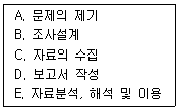
- A → B → C → E → D
- A → C → B → E → D
- C → B → A → E → D
- C → A → B → E → D
(정답률: 74%)
12. 어떤 연구자가 한 도시의 성인 500명을 무작위로 추출하여 인터넷 이용이 흡연에 미치는 영향을 조사한 결과, 인터넷 이용량이 많은 사람일수록 흡연양에도 유의미하게 많은 것으로 나타났다. 이를 토대로 인터넷 이용이 흡연을 야기한다는 인과적인 설명을 하는 경우 가장 문제가 되는 인과성의 요건은?
- 경험적 상관
- 허위적 상관
- 통계적 통제
- 시간적 순서
(정답률: 66%)
13. 다음 중 관찰의 단점과 가장 거리가 먼 것은?
- 피관찰자가 관찰 사실을 아는 경우 조사반응성으로 인한 왜곡이 있을 수있다.
- 표현능력이 부족한 대상에게 적용이 어렵다.
- 연구대상의 특성상 관찰할 수 없는 문제가 있다.
- 자료처리가 어렵다.
(정답률: 74%)
14. 질문지 작성 시 유의사항으로 틀린 것은?
- 가능한 명확하고 쉬운 단어를 사용한다.
- 폐쇄형 질문에서는 가능한 응답을 모두 제시해야 한다.
- 하나의 문항에 두 가지 이상의 내용을 물어봐야 한다.
- 연구자 임의로 응답자에 대한 가정을 해서는 안 된다.
(정답률: 83%)
15. 다음은 어떤 형태의 연구에 해당하는가?
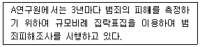
- 회상(recall)연구
- 패널(panel)연구
- 추세(trend)연구
- 코호트(cohort)연구
(정답률: 68%)
16. 이론의 기능을 모두 고른 것은?
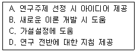
- B, C
- A, B, D
- A, C, D
- A, B, C, D
(정답률: 85%)
17. 우편조사에 관한 설명으로 틀린 것은?
- 접근하기 편리하고 광범위한 지역에 걸쳐 조사가 가능하다.
- 회수율이 낮으므로 서면 또는 전화로 협조를 구하는 것이 좋다.
- 응답 대상자 자신이 직접 응답했는지에 대한 통제가 어렵다.
- 응답자의 익명성을 보장하기 어렵다.
(정답률: 82%)
18. 개방형 질문(open questions)을 이용하기에 적합하지 못한 경우는?
- 응답자들의 지식수준이 높아 면접자의 도움 없이 독자적으로 응답할 수 있는 경우
- 응답자에 대한 사전지식의 부족으로 응답을 예측할 수 없는 경우
- 특정 행동에 대한 동기조성과 같은 깊이 있는 내용을 다루고자 하는 경우
- 숙련된 전문 면접자보다 자원봉사자에 의존하여 면접을 실시하는 경우
(정답률: 82%)
19. 설문지회수율을 높이는 방안과 가장 거리가 먼 것은?
- 독촉편지를 보내거나 독촉전화를 한다.
- 겉표지에 설문내용의 중요성을 부각시켜 응답자가 인식하게 한다.
- 개인 신상에 민감한 질문들을 가능한 줄인다.
- 폐쇄형 질문의 수를 가능한 줄인다.
(정답률: 80%)
20. 다음 중 과학적 연구의 논리체계에 관한 설명으로 틀린 것은?
- 사회과학 이론과 연구는 연역과 귀납의 방법을 통해 연결된다.
- 연역은 이론으로부터 기대 또는 가설을 이끌어내는 것이다.
- 귀납은 구체적인 관찰로부터 일반화로 나아가는 것이다.
- 귀납적 논리의 고전적인 예는 “모든 사람은 죽는다. 소크라테스는 사람이다. 따라서 소크라테스는 죽는다.”이다.
(정답률: 75%)
21. 면접조사 시 비교적 인지수준이 낮은 응답자들이 면접자 생각이나 지시를 비판 없이 수용하여 응답하게 될 가능성이 높은 것은 어떤 효과 때문인가?
- 1차 정보 효과
- 응답순서 효과
- 동조효과
- 최근정보 효과
(정답률: 70%)
22. 질문지 초안 완성 후 실시하는 사전검사에 관한 설명으로 옳은 것은?
- 사전검사는 가설을 보다 명확히 하기 위한 조사이다.
- 사전검사는 본조사의 조상방법과 같아야 한다.
- 사전검사 결과는 본 조사에 포함시켜 분석하여야 한다.
- 사전검사 표본 수는 본조사와 비슷해야 한다.
(정답률: 68%)
23. 참여관찰에서 윤리적인 문제를 겪을 가능성이 가장 높은 관찰자 유형은?
- 완전참여자
- 완전한 관찰자
- 참여자로서의 관찰자
- 관찰자로서의 참여자
(정답률: 77%)
24. 외생변수를 사전에 아는 경우, 외생변수가 실험대상이 되는 각 집단에 균등하게 영향을 미칠 수 있도록 실험집단과 통제집단을 선정하여 외생변수의 효과를 통제하는 방법은?
- 상쇄(counter balancing)
- 균형화(matching)
- 제거(elimination)
- 무작위화(randomization)
(정답률: 59%)
25. 내용분석에 관한 설명으로 틀린 것은?
- 일정한 기간 동안 진행되는 지속적 과정에 대한 분석이 용이하다.
- 분석대상에 영향을 미치지 않는 점에서 비개입적 조사방법이다.
- 잠재적 내용을 분석대상으로 할 경우, 객관성이 확보되는 장점이 있다.
- 양적 분석뿐만 아니라 질적 분석방법도 사용한다.
(정답률: 49%)
26. 다음 중 실험설계의 전제조건을 모두 고른 것은?
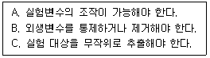
- A, B
- B, C
- A, C
- A, B, C
(정답률: 78%)
27. 지역을 분석단위로 하여 자살률을 분석한 결과 가톨릭 신도의 비율이 높은 지역일수록 개신교 신도의 비율이 높은 지역에 비해 평균자살 건수가 많다는 사실이 밝혀졌다. 이러한 결과에 기초하여 가톨릭 신도들이 개신교 신도에 비해 자살을 저지를 성향이 높다고 해석할 경우 지적될 수 있는 문제는?
- 생태학적 오류(ecological fallacy)
- 개인주의적 오류(individualistic fallacy)
- 내용타당도(content validity)
- 체계적 오차(systematic error)
(정답률: 72%)
28. 실험설계의 인과관계 분석을 위협하는 요소와 가장 거리가 먼 것은?
- 검사효과
- 사후검사
- 실험대상의 탈락
- 성숙 또는 시간의 경과
(정답률: 71%)
29. 사후실험설계(ex=post facto research design)의 특징에 관한 설명으로 틀린 것은?
- 가설의 실제적 가치 및 현실성을 높일 수 있다.
- 분석 및 해석에 있어 편파적이거나 근시안적 관점에서 벗어날 수 있다.
- 순수실험설계에 비하여 변수들 간의 인과관계를 명확히 밝힐 수 있다.
- 조사의 과정 및 결과가 객관적이며 조사를 위해 투입되는 시간 및 비용을 줄일 수 있다.
(정답률: 70%)
30. 집단조사의 특징과 가장 거리가 먼 것은?
- 집단조사는 집단에 속한 조직을 연구하는 데에만 사용할 수 있다.
- 집단으로 조사되므로 주변사람이 응답자에 영향을 미칠 가능성이 높다.
- 일반적으로 집단조사를 승인한 조직체나 단체에 유리한 쪽으로 응답할 가능성이 높다.
- 집단이 속한 조직으로부터 적절한 협조가 있으면, 비용과 시간을 절약할 수있는 조사기법이다.
(정답률: 75%)
2과목: 조사방법론 II
31. 확률표본추출방법만으로 짝지어진 것은?
- 집락표집, 계통표집, 편의표집, 할당표집
- 층화표집, 집락표집, 눈덩이표집, 할당표집
- 단순무작위표집, 계통표집, 유의표집, 할당표집
- 단순무작위표집, 계통표집, 층화표집, 집락표집
(정답률: 78%)
32. 연구에서 선택된 개념을 실제 현상에서 측정이 가능하도록 관찰 가능한 형태로 표현한 것은?
- 개념적 정의(conceptual definition)
- 이론적 정의(theoretical definition)
- 조작적 정의(operational definition)
- 구성요소적 정의(constitutive definition)
(정답률: 68%)
33. 측정도구의 타당도를 측정하는 방법이 아닌 것은?
- 재조사법
- 내용타당도
- 기준관련타당도
- 구성체타당도
(정답률: 69%)
34. 서스톤 척도(Thurston scale)에 대한 설명으로 틀린 것은?
- 처음 문장을 분류하는 평가자들의 성격에 따라 분포가 달라질 수 있다.
- 절차가 다른 척도보다 단순하고 문장이나 평가자의 수가 적어도 된다.
- 척도용으로 선정된 문장들이 평균값은 같으나 분산도가 다를 수 있다.
- 응답자의 점수가 같더라도 그가 선택하는 문항의 종류와 내용이 다를 수있다.
(정답률: 78%)
35. 4년제 대학교 대학생 집단을 학년과 성, 단과대학(인문사회, 자연, 예체능, 기타)로 구분하여 할당표집할 경우 할당표는 총 몇 개의 범 주로 구분되는가?
- 4
- 24
- 32
- 48
(정답률: 82%)
36. 다음 ( )에 알맞은 것은?
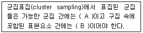
- A – 동질적, B – 동질적
- A – 동질적, B – 이질적
- A – 이질적, B – 동질적
- A – 이질적, B – 이질적
(정답률: 73%)
37. 지수에 관한 설명으로 틀린 것은?
- 단순지표로 측정하기 어려운 복합적인 개념을 측정할 수 있다.
- 경험적 현실세계와 추상적 개념세계를 조화시키고 일치시킨다.
- 변수에 대한 양적 측정치를 제공함으로써 정확성을 높여준다.
- 본래 의도한 속성을 정확히 측정하고 보다 일관성 있는 결과를 얻기 위해 단일문항이 주로 활용된다.
(정답률: 53%)
38. 비체계적 오류를 줄이는 방법에 관한 설명으로 틀린 것은?
- 측정항목 수를 가능한 한 늘린다.
- 조사대상자 관심 없는 항목도 측정한다.
- 2회 이상 동일한 질문이나 유사한 질문을 한다.
- 조사대상자가 모르는 내용은 측정하지 않는다.
(정답률: 65%)
39. 2013년 11월30일을 기준으로 47,563,753명의 선거인 명부를 기준으로 우리나라 유권자 1,500명을 뽑아 투표율을 조사하려 한다. 표본으로 추출된 1,500명을 인구비례에 따라 각 지역별로 나누어 표본을 무작위로 추출했다면 이때 사용한 표본추출 방법은?
- 판단표본추출
- 편의표본추출
- 비례층화표본추출
- 다단계편의표본추출
(정답률: 80%)
40. 표본추출을 위한 모집단의 구성요소나 표본추출단위가 수록된 목록은?
- 요소(element)
- 표집틀(sampling frame)
- 분석단위(unit of analysis)
- 표본추출분포(sampling distribution)
(정답률: 70%)
41. 표집구간내에서 첫 번째 번호만 무작위로 뽑고 다음부터는 매 k번째 요소를 표본으로 선정하는 표집방법은?
- 단순무작위표집
- 계통표집
- 층화표집
- 집락표집
(정답률: 71%)
42. 측정수준과 그 예가 서로 맞지 않는 것은?
- 등간측정 : 온도
- 비율측정 : 지능지수(IQ)
- 명목측정 : 주민등록번호
- 서열측정 : 학급석차(등수)
(정답률: 74%)
43. 연구자가 알고 있는 사람들로부터 소개받은 방법으로 면접대상자를 확보하는 표집방법은?
- 눈덩이표집
- 유의표집
- 층화표집
- 할당표집
(정답률: 74%)
44. 척도의 신뢰도 측정방법인 반분법에 관한 설명으로 옳은 것은?
- 첫 번째 조사가 두 번째 조사에 영향을 미칠 수 있다.
- 신뢰도가 낮을 경우 어떤 문항을 제거해야 할지 알 수 있다.
- 시간이 지남에 따라 실제 값이 변화하는 것을 토제할 수 없다.
- 어떻게 반분하느냐에 따라 상관계수가 달라질 수 있다.
(정답률: 67%)
45. 추출되는 표본이 모집단의 특성을 잘 대표할 수 있게 사전에 모집단의 특성을 나타내는 단위그룹별로 표본수를 배정하고 표본을 추출하는 방법은?
- 누적표집
- 판단표집
- 임의표집
- 할당표집
(정답률: 75%)
46. 측정에서 신뢰도와 타당도에 관한 설명으로 옳은 것은?
- 반복해서 측정하였을 때 동일한 결과가 나오면 신뢰도가 높다.
- 측정하고자 하는 대상의 속성을 정확하게 측정하였을 때 신뢰도가 높다.
- 반복해서 측정하였을 때 동일한 결과가 나오면 타당도가 높다.
- 신뢰도가 높은 측정은 반드시 타당도가 높다.
(정답률: 83%)
47. 표본의 크기를 결정하는 요소와 가장 거리가 먼 것은?
- 모집단의 동질성
- 조사비용의 한도
- 연구자의 수
- 조사가설의 내용
(정답률: 62%)
48. 다음 중 표집틀(sampling frame)이 모집단(population)보다 큰 경우는?(오류 신고가 접수된 문제입니다. 반드시 정답과 해설을 확인하시기 바랍니다.)
- A병원 환자를 환자기록부를 이용해서 표집하는 경우
- A병원 환자를 병원 입구에서 임의로 표집하는 경우
- A병원 환자를 서울지역 휴대폰 가입자 명부를 이용해서 표집하는 경우
- A병원 환자를 무선적 전화걸기방법으로 표집하는 경우
(정답률: 45%)
49. 명목척도 구성을 위한 측정범주들에 대한 기본 원칙이 아닌 것은?
- 배타성
- 포괄성
- 논리적 연관성
- 선택성
(정답률: 52%)
50. 다음 중 표집오차(sampling error)에 관한 설명으로 틀린 것은?
- 전체 표본의 크기가 같다고 했을 때, 단순무작위표본추출법에서보다 층화표본추출법에서 표집오차가 작게 나타난다.
- 전체 표본의 크기가 같다고 했을 때, 단순무작위표본추출법에서보다 집락표본추출법에서 표집오차가 크게 나타난다.
- 단순무작위표본추출법에서 표집오차는 표본의 크기가 클수록 커진다.
- 단순무작위표본추출법에서 표집오차는 분산의 크기가 클수록 커진다.
(정답률: 64%)
51. 단순무작위표집법으로 표집할 때 표본크기를 50에서 100으로 늘렸다. 이때 나타나는 효과와 가장 관련이 깊은 것은?
- 아무런 효과가 없다.
- 추정치의 분산이 줄어든다.
- 모집단의 평균값이 커진다.
- 표본평균과 표본최빈값이 일치한다.
(정답률: 71%)
52. 하나의 개념을 측정하기 위해 두 개 이상의 다른 관련 자료를 수집하거나 측정하는 방법은?
- 재검사법
- 반구조화 면접법
- 소시오메트리(sociometry)
- 다각적 측정방법(triangulation)
(정답률: 78%)
53. 사용하고 있는 측정도구의 측정값과 기준이 되는 측정도구의 측정값과의 상관관계로 측정되는 타당도는?
- 구성체타당도
- 액면타당도
- 기준관련타당도
- 다차원타당도
(정답률: 60%)
54. 성인에 대한 우울증 검사 도구를 청소년들에게 그대로 적용할 때 가장 우려되는 측정오차는?
- 고정반응
- 문화적 차이
- 무작위 오류
- 사회적 바람직성
(정답률: 67%)
55. 명목변수로 적합하지 않은 것은?
- 종교
- 성별
- 소득
- 국적
(정답률: 80%)
56. 신뢰도 측정방법 중 크론바하 알파(Cronbach's Alpha)에 관한 설명으로 옳은 것은?
- 한 척도에 여러 개의 크론바하 알파 값이 있다.
- 문항 수가 적을수록 크론바하 알파 값은 커진다.
- 각 문항들이 서로 상관관계가 없다는 논리에 근거하고 있다.
- 신뢰도가 낮은 경우 신뢰도를 낮게 하는 문항을 찾아낼 수 있다.
(정답률: 55%)
57. 측정의 수준과 사용가능한 통계기법이 바르게 짝지어진 것은?
- 명목척도 – 중앙값(median)
- 서열척도 – 분산(variance)
- 등간척도 – 기하평균(geometric mean)
- 비율척도 – 변동계수(coefficient variation)
(정답률: 67%)
58. 다음 설문문항에서 사용한 척도는?
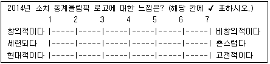
- 리커트척도(Likert scale)
- 거트만척도(Guttman scale)
- 서스톤척도(Thurston scale)
- 의미분화척도(semantic differential scale)
(정답률: 72%)
59. 조작화와 관련하여 다음은 무엇에 대한 예에 해당하는가?
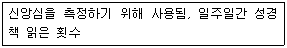
- 개념적 정의
- 지표
- 개념
- 지수
(정답률: 57%)
60. 척도를 구성하는 가장 중요한 이유는?
- 표면타당도를 향상시키기 위해
- 외적 타당도를 향상시키기 위해
- 내적 타당도를 향상시키기 위해
- 하나의 문항에서 연루될 수 있는 왜곡된 측정을 막기 위해
(정답률: 50%)
3과목: 사회통계
61. 크기가 100인 확률표본으로부터 얻은 표본평균에 근거하여 구한 모평균에 대한 90% 신뢰구간의 오차의 한계가 3이라고 할 때, 오차의 한계가 1.5가 넘지 않도록 표본설계를 하려면 표본의 크기를 최소한 얼마 이상이 되도록 하여야 하는가?
- 100
- 200
- 400
- 1000
(정답률: 42%)
62. p-값(p-value)과 유의수준(significance level) α에 대한 설명으로 옳은 것은?
- p-값 ＞α 이면 귀무가설을 기각할 수 있다.
- p-값 ＜ α 이면 귀무가설을 기각할 수 있다.
- p-값 = α이면 귀무가설은 반드시 채택된다.
- p-값과 귀무가설 채택여부와는 아무 관계가 없다.
(정답률: 68%)
63. 일원배치 분산분석을 시행하였다. 처리는 모두 5개이며, 각 처리당 6회씩 반복 실험을 하였다. 결정계수의 값이 0.6, 처리평균제곱의 값이 '300' 이라면 오차제곱합의 값은?
- 800
- 900
- 1600
- 1800
(정답률: 45%)
64. 어떤 철물점에서 10가지 길이의 못을 팔고 있다. 단, 못의 길이(단위:cm)는 각각 2.5, 3.0, 3.5, 4.0, 4.5, 5.0, 5.5, 6.0, 6.5, 7.0이다. 만약, 현재 남아 있는 못 가운데 10%는 4.0cm인 못이고, 15%는 5.0cm인 못이며, 53%는 5.5cm인 못이라면 못 길이의 최빈수는?
- 4.5
- 5.0
- 5.5
- 6.0
(정답률: 70%)
65. 전국의 고등학생 1000명을 대상으로 모의수능시험을 치른 결과 A영역(80점 만점)에서 평균이 45점, 표준편차가 15점이었다. 어떤 학생의 원점수가 67.5점 일 때, 평균이 50점, 표준편차는 10점으로 환산하는 표준 점수는 얼마인가?
- 65.0
- 72.5
- 50.0
- 70.5
(정답률: 36%)
66. 어느 대형마트 고객관리팀에서는 다음과 같은 기준에 따라 매일 고객 집단을 분류하여 관리한다. 어느 특정한 날 마트를 방문한 고객들의 자료를 분류한 결과 A그룹이 30%, B그룹이 50%, C그룹이 20%인 것으로 나타났다. 이날 마트를 방문한 고객 중 임의로 4명을 택할 때 이 중 3명만이 B그룹에 속할 확률은?
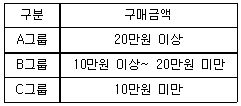
- 0.25
- 0.27
- 0.37
- 0.39
(정답률: 43%)
67. 한 여론조사에서 어느 지역의 유권자 중에서 940명을 임의로 추출하여 연령세대별로 가장 선호하는 정당을 조사한 결과의 이차원 분할표가 다음과 같다. 독립성 검정을 위한 어느 통계소프트웨어의 출력 결과에서 유의수준 0.⑤에서 검정할 때 올바른 해석은?
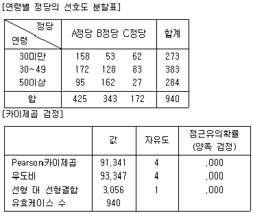
- 카이제곱 통계량에 대한 유의확률이 유의수준보다 작으므로 독립이라는 가설을 기각한다.
- 우도비 통계량에 대한 유의확률이 유의수준보다 작으므로 독립이라는 가설을 기각할 수 없다.
- 카이제곱 통계량이 유의수준보다 크므로 독립이라는 가설을 기각한다.
- 우도비 통계량이 유의수준보다 크므로 독립이라는 가설을 기각할 수 없다.
(정답률: 36%)
68. 분산분석의 기본 가정이 아닌 것은?
- 각 모집단에서 반응변수는 정규분포를 따른다.
- 각 모집단에서 독립변수는 F분포를 따른다.
- 반응변수의 분산은 모든 모집단에서 동일하다.
- 관측 값들은 독립적이어야 한다.
(정답률: 52%)
69. 두 변수 x와 y의 함수관계를 알아보기 위하여 크기가 10인 표본을 취하여 단순회귀분석을 실시한 결과 회귀식 y=20-0.1x를 얻었고, 결정계수 R2은 0.81이었다. x와 y의 상관계수는?
- -0.1
- -0.81
- -0.9
- -1.1
(정답률: 49%)
70. 단순회귀모형 Y=α+βx+ε에서 회귀직선의 유의성을 검정하기 위한 가설로 옳은 것은?
- H0:β=0, H1:β≠0
- H0:β≠0, H1:β=0
- H0:β=0, H1:β＞0
- H0:β=0, H1:β＜0
(정답률: 50%)
71. LCD패널을 생산하는 공장에서 출하 제품의 질적 관리를 위하여 패널 100개를 임의 추출하여 실제 몇 개의 결점이 있는가를 세어본 결과 평균은 5.88개, 표준편차 2.03개이다. 표준오차의 추정치는 얼마인가?
- 0.203
- 0.103
- 0.230
- 0.320
(정답률: 42%)
72. 다음 분산분석표에 관한 설명으로 틀린 것은?
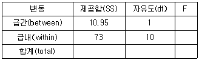
- F 통계량은 0.15이다.
- 두 개의 집단의 평균을 비교하는 경우이다.
- 관찰치의 총 개수는 12개이다.
- F 통계량이 기준치보다 작으면 집단사이에 평균이 같다는 귀무가설을 기각하지 않는다.
(정답률: 44%)
73. 모평균이 10, 모분산이 9인 정규 모집단으로부터 추출한 크기 36인 표본의 표본평균은 어떤 분포를 따르는가?
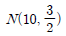
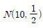
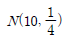
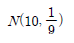
(정답률: 37%)
74. n개의 자료 x1,x2,⋯,xn의 평균을
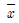
, 표준편차를 s라고 할 때, I번째 자료 xi의 표준화 점수를 구하는 방법은?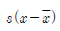
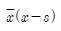
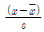
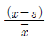
(정답률: 57%)
75. 상관계수에 관한 설명으로 옳은 것은?
- 두 변수 X, Y사이의 선형관계의 정도를 나타내는 측도이다.
- 상관계수는 0과 1사이의 값이다.
- X와 Y의 상관계수가 ρxy이면 aX, bY의 상관계수는 abρxy이다.
- X가 증가할 때 Y가 감소하면 상관계수는 1에 가까이 간다.
(정답률: 49%)
76. 정규모집단의 모평균에 대한 신뢰구간에 관한 설명으로 틀린 것은?
- 신뢰수준이 높을수록 신뢰구간 폭은 넓어진다.
- 표본 수가 증가할수록 신뢰구간 폭은 넓어진다.
- 모분산을 아는 경우는 정규분포를, 모르는 경우는 t 분포를 이용하여 신뢰 구간을 구한다.
- 95% 신뢰구간이라 함은 동일한 추정방법에 의해 반복하여 신뢰구간을 추정할 경우, 전체 반복횟수의 약 95%정도는 신뢰구간의 내에 모평균이 포함되어 있음을 의미한다.
(정답률: 33%)
77. 어떤 공장에서 생산된 전자제품 중 5개의 표본에서 한 개 이상의 불량품이 발견되면, 그날의 생산된 전 제품을 불합격으로 처리하고 그렇지 않으면 합격으로 처리한다. 이 공장의 생산공정의 실제 불량률이 0.1일 때, 어느 날 생산된 전 제품이 불합격 처리될 확률은? (단, 95=59049)
- 0.10745
- 0.40951
- 0.42114
- 0.28672
(정답률: 53%)
78. 공정한 동전 10개를 동시에 던질 때, 정확히 한 개만 앞면이 나올 확률은?
- 3/1024
- 9/1024
- 10/1024
- 12/1024
(정답률: 58%)
79. 표본으로 추출된 6명의 학생이 지원했던 여름방학 아르바이트의 수가 다음과 같이 정리되었다. 피어슨의 비대칭계수(p)에 근거한 자료의 분포에 관한 설명으로 옳은 것은?
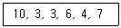
- 비대칭계수의 값이 0에 근사하여 좌우 대칭형 분포를 나타낸다.
- 비대칭계수의 값이 양의 값을 나타내어 왼쪽으로 꼬리를 길게 늘어뜨린 모양을 나타낸다.
- 비대칭계수의 값이 음의 값을 나타내어 왼쪽으로 꼬리를 길게 늘어뜨린 모양을 나타낸다.
- 관측 값들이 주로 왼쪽에 모여 있어 오른쪽으로 꼬리를 길게 늘어뜨린 모양을 나타낸다.
(정답률: 50%)
80. 귀무가설이 참임에도 불구하고 귀무가설을 기각하는 판정을 내릴 확률은?
- 제1종 오류를 범할 확률
- 제2종 오류를 범할 확률
- 유의확률
- 유의수준
(정답률: 63%)
81. 자료 x1, x2, ⋯, xn을 zi=axi+b, i=1, 2, ⋯, n(a, b는 상수)로 변환 할 때, 평균과 분산에 있어서 변환한 자료와 원자료 사이에 성립하는 관계식은? (단, 원자료의 평균과 분산은 각각
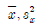
이고, 변환한 자료의 평균과 분산은 각각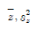
이다.)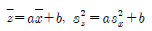
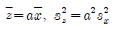
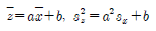
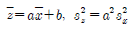
(정답률: 45%)
82. 중회귀분석에서 회귀제곱합(SSR)이 150이고 오차제곱합(SSE)이 50인 경우, 결정계수는?
- 0.25
- 0.3
- 0.75
- 1.1
(정답률: 61%)
83. 다음은 확률변수 X에 대한 확률분포일 때 2X-5의 분산은?
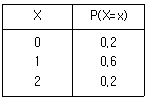
- 0.4
- 0.6
- 1.6
- 2.4
(정답률: 50%)
84. 다음 분산분석표의 ( )에 알맞은 것은?
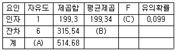
- A : 7, B : 1893.24, C : 9.50
- A : 7, B : 1893.24, C : 2.58
- A : 7, B : 52.59, C : 3.79
- A : 7, B : 52.59, C : 2.58
(정답률: 56%)
85. 어떤 동전이 공정한가를 검정하고자 20회를 던져본 결과 15번 앞면이 나왔다. 이 검정에 사용된 카이제곱 통계량(
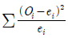
)값은?- 2.5
- 5
- 10
- 12.5
(정답률: 16%)
86. 봉급생활자의 연봉과 근속년수, 학력 간의 관계를 알아보기 위하여 연봉을 반응변수로 하여 회귀분석을 실시하기로 하였다. 그런데 근속년수는 양적 변수이지만 학력은 중졸, 고졸, 대졸로 수준 수가 3개인 지시변수(또는 가변수)이다. 다중회귀모형 설정 시 필요한 설명변수는 모두 몇 개인가?
- 1
- 2
- 3
- 4
(정답률: 46%)
87. 모집단의 평균 라 하고 표본평균을
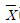
라 할 때,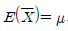
의 의미는?- 무작위 표본의 표본평균은 모집단의 평균에 대한 불편추정량(unbiased estimator)이다.
- 무작위 표본의 표본평균은 모집단에 평균에 대한 일치추정량(consistent estimator)이다.
- 무작위 표본의 표본평균의 기대치는 모집단의 분산에 대한 불편추정량(unbiased estimator)이다.
- 무작위 표본의 표본평균의 기대치는 모집단의 분산에 대한 일치추정량(consistent estimator)이다.
(정답률: 37%)
88. 성공률이 p인 베르누이 시행을 4회 반복하는 실험에서 성공이 일어난 횟수 X의 표준편차는?
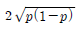
- 2p(1-p)
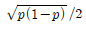
- p(1-p)/2
(정답률: 48%)
89. 다음은 왼손으로 글자를 쓰는 사람 8명에 대하여 왼손의 악력 X와 오른손의 악력 Y를 측정하여 정리한 결과이다. 왼손으로 글자를 쓰는 사람들의 왼손 악력이 오른손 악력보다 강하다고 할 수 있는가에 대해 유의수준 5%에서 검정하고자 한다. 검정통계량 T의 값과 기각역을 구하면?
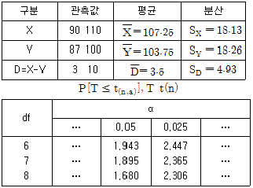
- T=2.01, T≥1.895
- T=0.71, T≥1.860
- T=2.01, |T|≥2.365
- T=0.71, |T|≥2.365
(정답률: 41%)
90. 어느 회사에서는 남녀사원이 퇴직할 때까지의 평균근무연수에 차이가 있는지를 알아보기 위하여 무작위로 추출하여 다음과 같은 자료를 얻었다. 남자사원의 평균근무연수가 여자사원에 비해 2년보다 더 길다고 할 수 있는가에 대해 유의수준 5%로 검정한 결과는?
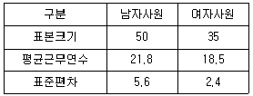
- 귀무가설을 기각한다. 따라서 남자사원의 평균근무연수는 여자사원보다 더 길다.
- 귀무가설을 채택한다. 따라서 남자사원의 평균근무연수는 여자사원보다 더 길지 않다.
- 귀무가설을 기각한다. 따라서 남자사원의 평균근무연수는 여자사원에 비해 2년보다 더 길다.
- 귀무가설을 채택한다. 따라서 남자사원의 평균근무연수는 여자사원에 비해 2년보다 더 길지 않다.
(정답률: 38%)
91. 행의 수가 2, 열의 수가 3인 이원교차표에 근거한 카이제곱 검증을 하려고 한다. 검정통계량의 자유도는 얼마인가?
- 1
- 2
- 3
- 4
(정답률: 72%)
92. 어떤 PC방을 이용하는 고객 중 무작위로 추출된 100명의 고객들을 대상으로 나이를 조사하여 다음 결과를 얻었다. 변동계수(coefficient of variation)는?
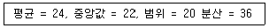
- 36%
- 25%
- 10%
- 1.5%
(정답률: 46%)
93. 변량 x1, x2, ⋯, xn에 대하여 |x1-a|+|x2-a|+⋯|xn-a|을 최소로 하는 대푯값 a는?
- 산술평균
- 중위수(중앙값)
- 최빈수
- 기하평균
(정답률: 47%)
94. 정규분포에 관한 설명으로 틀린 것은?
- 종모양의 좌우 대칭인 분포이다.
- 평균, 중위수, 범위는 모두 같다.
- 분포곡선아래의 전체면적인 항상 1이다.
- 표준편차의 값이 작을수록 평균근청의 확률이 커지고, 표준편차의 값이 커짐에 따라 분포곡성은 가로축이 가깝게 평평해진다.
(정답률: 48%)
95. 독립변수가 k개인 경우 중회귀모형 y=Xβ+ε에서 회귀계수 벡터 β의추정식 b의 분산-공분산 행렬은? (단, Var(ε)=σ2I)
- Var(b)=(X'X)-1σ2
- Vra(b)=X'Xσ2
- Var(b)=k(X'X)-1σ2
- Var(b)=k(X'X)σ2
(정답률: 28%)
96. 어느 공장에서 가루비누를 생산하여 용기에 담아 판매하고 있다. 용기의 무게는 표준편차가 1온스인 정규분포를 따르는 것으로 알려져 있다. 25개의 용기를 무작위로 추출하여 무게를 측정한 결과 평균은 49.64온스였다. 25개의 용기의 무게에 대한 평균의 표준편차는?
- 0.04
- 0.1
- 0.2
- 25
(정답률: 46%)
97. 다음 중 앞면이 나올 확률이 0.5인 동전을 n번 던질 때 앞면이 나타난 비율 에 대한 설명으로 틀린 것은?(오류 신고가 접수된 문제입니다. 반드시 정답과 해설을 확인하시기 바랍니다.)
- p100=p1000이다.
- npn의 분포는 이항분포
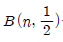
을 따른다. - pn의 분산은
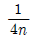
이다. - n이 커짐에 따라 pn의 확률분포는 근사적으로 정규분포를 따른다.
(정답률: 34%)
98. 회귀분석에서는 회귀모형에 대한 몇 가지 가정을 전제로 하여 분석을 실시하게 되며, 이러한 가정들에 대한 타당성은 잔차분석(residual analysis)을 통하여 판단하게 된다. 이 때 검토되는 가정이 아닌 것은?
- 정규성
- 등분산성
- 독립성
- 불편성
(정답률: 44%)
99. 10명의 스포츠 댄스 회원들이 한 달간 댄스 프로그램에 참가하여 프로그램 시작 시 체중과 한 달 후 체중의 차이를 알아보려고 할 때 적합한 검정방법은?
- 대응표본 t-검정
- 독립표본 t-검정
- z-검정
- F-검정
(정답률: 33%)
100. 다음 중 상관분석을 위해 산점도에서 관찰해야 할 자료의 특징이 아닌 것은?
- 선형 또는 비선형 관계의 여부
- 이상점의 존재 여부
- 자료의 층화 여부
- 원점(0, 0)의 통과 여부
(정답률: 58%)